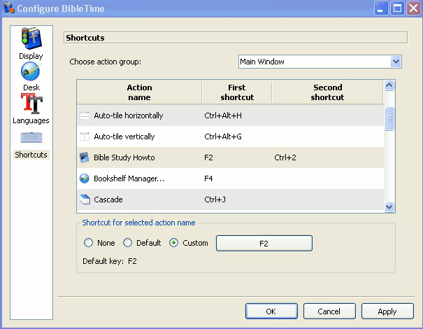

Содержание
В этом разделе вы найдете обзор настройки BibleTime, который можно найти в разделе в главном меню.
Пользовательский интерфейс BibleTime может быть настроен многими способами в зависимости от ваших потребностей. Вы можете получить доступ к диалоговому окну конфигурации, выбрав пункт.
Поведение при запуске можно настроить. Выберите один из следующих вариантов:
Показывать заставку при запуске
Шаблоны отображения определяют визуализацию текста (цвета, размер и т.д.). Доступны различные встроенные шаблоны. Если вы выберете один из них, то увидите предварительный просмотр на правой панели.
Множество функций, предусмотренных SWORD серверная часть теперь могут быть настроены в BibleTime. Эти функции задокументированы прямо в диалоговом окне. У вас также есть возможность указать стандартные работы, которые следует использовать, когда в справочнике не указано никаких конкретных работ. Пример: стандартная Библия используется для отображения содержания перекрестных ссылок в Библии. Когда вы наведете на них курсор, журнал покажет содержание упомянутых стихов в соответствии со стандартной Библией, которую вы указали. С помощью текстовых фильтров можно управлять внешним видом текста.
Здесь вы можете указать, какой язык следует использовать для названий библейских книг. Установите его на свой родной язык, если он доступен, и вы почувствуете себя как дома.
По умолчанию BibleTime использует шрифт системного дисплея по умолчанию. При необходимости вы можете переопределить этот шрифт. Некоторые языки требуют, чтобы специальные шрифты отображались правильно, и это диалоговое окно позволяет указать пользовательский шрифт для каждого языка.
 |
Диалоговое окно "Параметры" - шрифты.
BibleTime теперь может использовать все поддерживаемые шрифты. До тех пор, пока интересующие вас работы отображаются правильно, здесь ничего не нужно делать. Если работа отображается только в виде серии вопросительных знаков (??????) или пустые коробки, то вы знайте, что стандартный шрифт дисплея не содержит символов, используемых в этом модуле.
Чтобы исправить это, выберите язык этого модуля из выпадающего меню. Установите флажок использовать пользовательский шрифт. Теперь выберите шрифт. Например, шрифт, поддерживающий множество языков, называется Code2000. Если ни один установленный шрифт не может отобразить интересующий вам модуль, попробуйте установить пакет локализации для этого языка.
Подробные инструкции по установке шрифтов выходят за рамки данного руководства. Для получения дополнительной информации вы можете обратиться к Unicode РУКОВОДСТВО .
Шрифты могут быть установлены из нескольких источников:
Ваш дистрибутив *nix.
Пакеты локализации Вашего дистрибутива.
На этом компьютере установлена Microsoft Windows®.
Коллекция шрифтов, например, доступных в Adobe или Bitstream.
Онлайн-коллекции шрифтов.
Шрифты Unicode поддерживают больше символов, чем другие шрифты, и некоторые из этих шрифтов доступны бесплатно. Ни один из доступных шрифтов не включает в себя все символы, определенные в стандарте Unicode, поэтому вы можете использовать разные шрифты для разных языков.
Таблица 4.1. Шрифты Unicode
| Code2000 | Пожалуй, лучший бесплатный шрифт Unicode, охватывающий широкий спектр символов. |
| SIL unicode шрифты | Отличные шрифты Unicode от Летнего Института лингвистики. |
| Свободные шрифты | Новая инициатива свободных шрифтов Unicode. |
| Каталог шрифтов Crosswire | Несколько шрифтов доступны с FTP-сайта Crosswire Bible Society. |
| Bitstream CyberBit | Охватывает почти весь диапазон Unicode, но может замедлить BibleTime из-за его размера. |
| Clearlyu | Входит в некоторые дистрибутивы. Содержит европейские, греческие, еврейские, тайские. |
| Caslon, Monospace, Cupola, Caliban | Частично охватывают, см. Информацию на сайте. |
В сети есть хорошие списки шрифтов Unicode, такие как Christoph Singer ( Многоязычные шрифты Unicode TrueType в Интернете) или Alan Wood ( Диапазоны символов Unicode и шрифты Unicode, которые их поддерживают).
Ярлыки (ранее известные как горячие клавиши) - это специальные команды клавиш, которые можно использовать вместо пунктов меню и значков. Некоторые команды BibleTime имеют предопределенные ярлыки (полный список см. в разделе Ярлыки). Большинству BibleTime командам могут быть назначены сочетания клавиш. Это очень полезно для быстрого доступа к функциям, которые вам больше всего нужны.
|  |
В предыдущем примере F2, Bible Study Руководство имеет дополнительный ярлык, определенный CTRL+2.